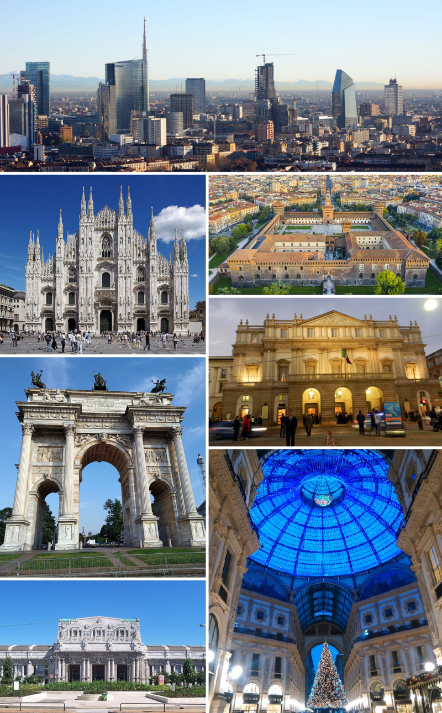

men's fashion
Milan (/mɪˈlæn/, US also /mɪˈlɑːn/,[4] Milanese: [miˈlãː] (About this soundlisten); Italian: Milano [miˈlaːno] (About this soundlisten))[5] is a city in northern Italy, capital of Lombardy, and the second-most populous city in Italy after Rome. Milan served as the capital of the Western Roman Empire, the Duchy of Milan and the Kingdom of Lombardy–Venetia. The city proper has a population of about 1.4 million[6] while its metropolitan city has 3.26 million inhabitants.[7] Its continuously built-up urban area, that stretches well beyond the boundaries of the administrative metropolitan city, is the fourth largest in the EU with 5.27 million inhabitants.[8] The population within the wider Milan metropolitan area, also known as Greater Milan, is estimated at 8.2 million, making it by far the largest metropolitan area in Italy and the 3rd largest in the EU.[9][10] Milan is considered a leading alpha global city,[11] with strengths in the fields of art, commerce, design, education, entertainment, fashion, finance, healthcare, media, services, research and tourism. Its business district hosts Italy's stock exchange (Italian: Borsa Italiana), and the headquarters of national and international banks and companies. In terms of GDP, it has the second-largest economy among EU cities after Paris, and is the wealthiest among EU non-capital cities.[12][13] Milan is viewed as part of the Blue Banana and one of the "Four Motors for Europe".
